政策
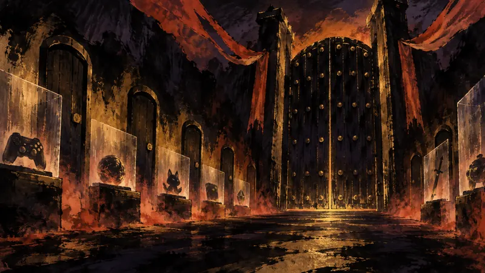
EGDF：Apple 新商業條款仍在削弱公平競爭（譯）
來源：EGDF
Apple 說是新條款，開發者看到的卻可能是替代商店仍難以長大的舊問題。
對玩家的影響：玩家可能看到更多商店外付款或分發選項，但實際可用性仍取決於歐盟審查結果與 Apple 的後續調整。
觀點：對玩家來說，重新分配的重點是付款路徑與商店選擇，不是某個單一遊戲功能。
先鴉｜黎明快訊
玩家能動性：政策如何限制它、產業如何形塑它、敘事設計如何實現它。
第一線
政策

來源：EGDF
Apple 說是新條款，開發者看到的卻可能是替代商店仍難以長大的舊問題。
對玩家的影響：玩家可能看到更多商店外付款或分發選項，但實際可用性仍取決於歐盟審查結果與 Apple 的後續調整。
觀點：對玩家來說，重新分配的重點是付款路徑與商店選擇，不是某個單一遊戲功能。
政策
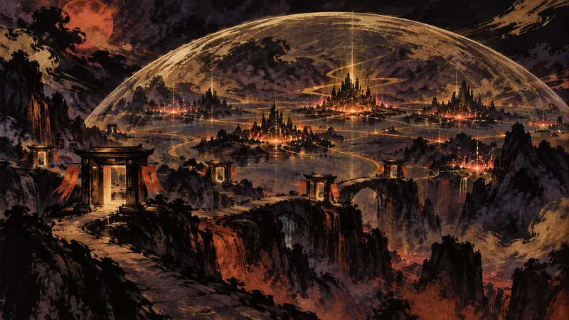
來源：歐盟執委會 Digital Strategy
45 百萬名月活躍使用者，讓 Roblox 從遊戲平台跨進歐盟最高層級的監管範圍。
對玩家的影響：玩家可能看到更嚴格的內容安全、未成年人保護與申訴機制，但平台也會因此增加資料與風險治理要求。
觀點：這項指定把玩家安全從平台的自願承諾，移到可受監督的責任範圍。
第一線
4Gamers
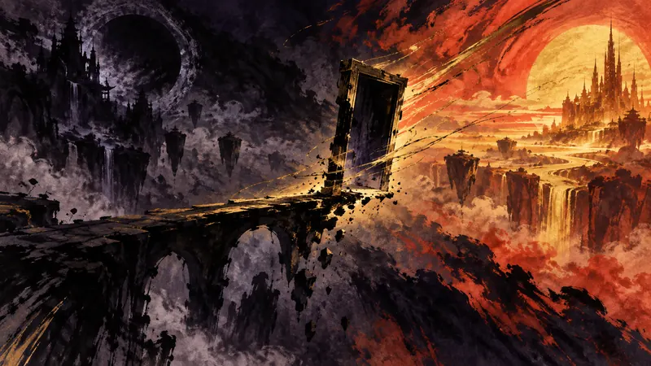
《Physint》換平台不只是獨佔變動，還牽動預算超支、時程壓力與收益歸屬。
觀點：平台獨佔談判一變，玩家失去的首先是未來在哪裡遊玩的確定性，得到的則可能是更多硬體選項。
4Gamer.net
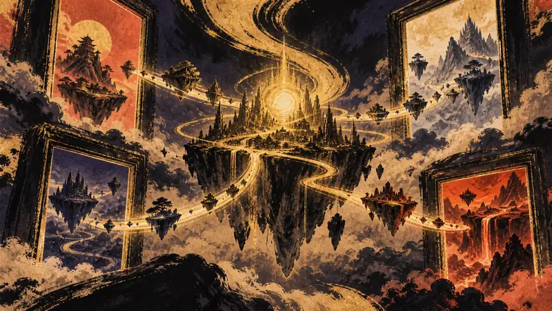
當 Roblox 不再只守著原本入口，創作者爭取玩家的戰場也會一起放大。
觀點：若遊戲真的能離開原本的入口，玩家取得作品的路徑會變多，創作者也不必把所有觸及機會押在同一個平台。
巴哈姆特 GNN
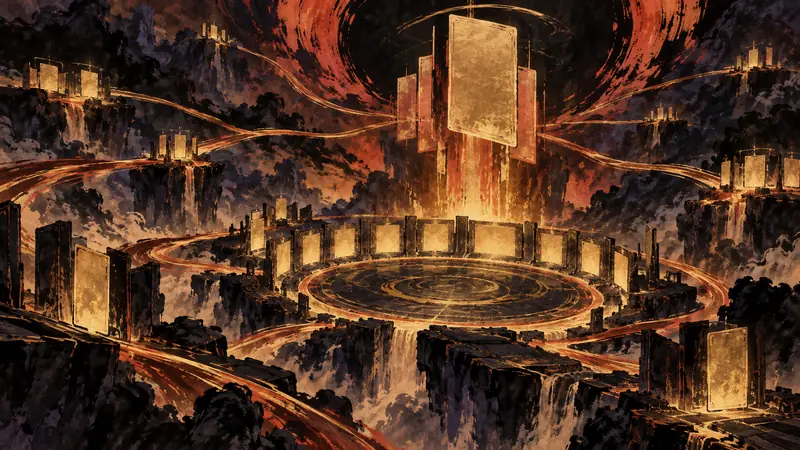
等了多年，《TAG FORCE GX》終於定下日期，中文支援也讓重返舊作少了一道門檻。
觀點：中文支援讓更多玩家能自己判斷要不要進入這款舊作，不必先把語言門檻當成篩選器。
遊研社
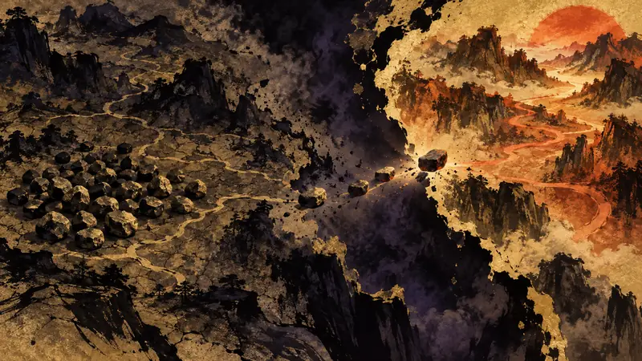
內容幾乎一次收齊，存檔卻不能完整延續；《三國志14》決定版的代價很具體。
觀點：一次購齊內容的便利，和保留既有遊玩歷史的權利，在這裡沒有同時成立。
Polygon
300 萬美元的合作案只差一票通過，也把 Vice City 的犯罪形象帶進城市品牌之爭。
觀點：這種宣傳把玩家的注意力從螢幕帶到城市，讓追星與期待成為可以親身參與的樂趣，這份興奮本身很真實。
Polygon

這張 Mewtwo 不在卡包裡，收藏者得先在指定美國通路消費 15 美元。
觀點：限量卡把收藏的快樂和取得資格綁在一起，玩家得把時間花在追蹤通路，才能行使原本很簡單的購買選擇。
Gry-Online.pl
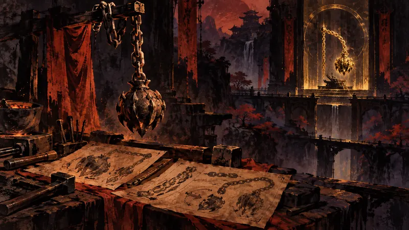
一件 2015 年就想加入的武器，為何要等到重製版與資料片才重新出現？
觀點：被延後的內容讓玩家看見作品不是一次成形，而是由技術、預算與時程共同裁切出來的。
Gry-Online.pl
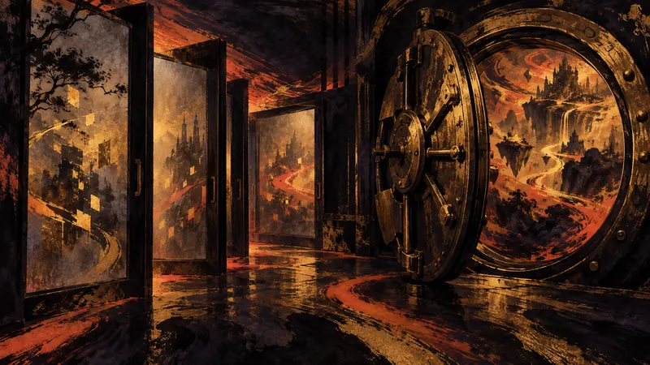
玩家越想提前看見《GTA 6》，Rockstar 就越得把開發現場包得更緊。
觀點：玩家追蹤洩漏與未公開內容的興奮並沒有錯，但每一次提前曝光都會改變開發者能否控制作品被看見的順序。
JeuxVideo.com
Switch 2 終於支援電視 VRR，但目前真正能用上的遊戲只有一款。
觀點：這是玩家可以感受到的技術改善，但它把「流暢」的責任分散到主機、遊戲與電視三個環節。
JeuxVideo.com
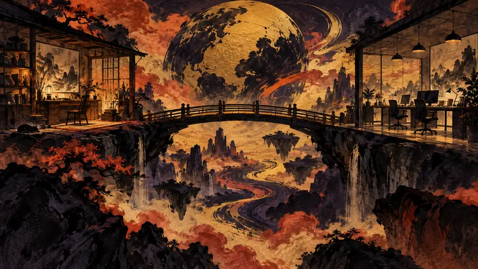
近 1,900 名暴雪員工談了兩年，終於把每週兩天遠距工作寫進合約。
觀點：玩家通常只看見更新日期，卻不會看見完成更新的人每天要付出多少通勤與照護成本。
第一線
인벤 Inven（韓國，韓語）
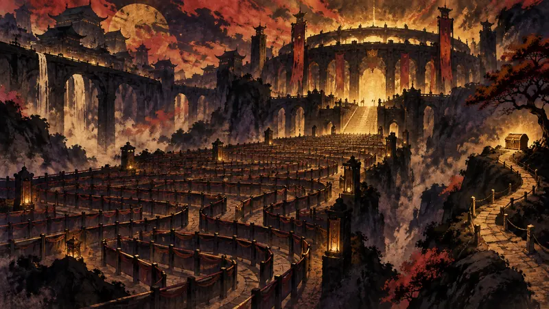
午夜前湧現超過200人的隊伍，讓第一天的現場名額在活動開始前就先用完。
觀點：熱門活動把玩家的時間與身體容量直接變成稀缺資源，能否參加不只取決於想不想玩。
인벤 Inven（韓國，韓語）
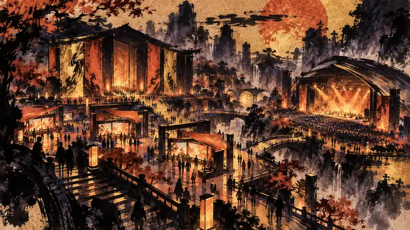
GXG 2026 把遊戲體驗、創作展示與現場演出放進同一個週末活動裡。
觀點：這類活動把玩家從單獨消費者的位置，換成能親自比較作品、接觸創作者與社群的人。
Gry-Online.pl
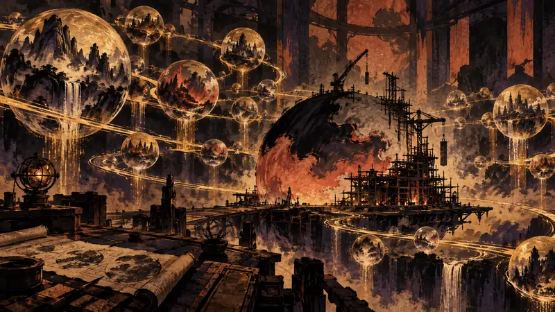
93 倍的製作速度聽來驚人，真正關鍵是它能否轉化成完成度與更多創作選擇。
觀點：如果工具真的把重複工作壓縮到這種程度，小團隊可能取得過去只有大公司負擔得起的試錯空間。
JeuxVideo.com
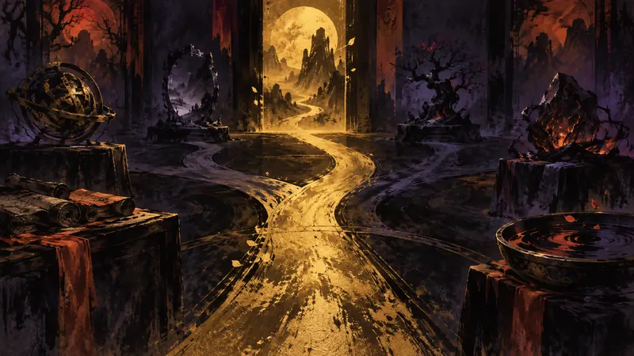
三件物品只有戒指能讓詛咒順利生效，選錯就會把任務推向戰鬥。
觀點：攻略把探索中的不確定性換成一條可照走的路，玩家因此能保住時間，也可能少掉自己推理的樂趣。